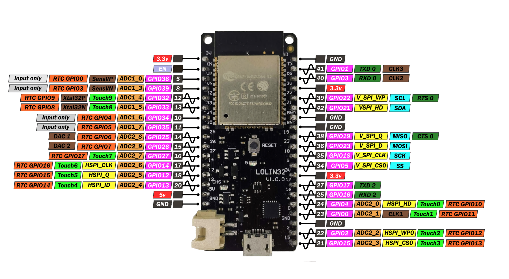

GPIO
GPIO è l'acronimo di General Purpose Input Output ed è il concetto con cui si descrive l'interazione della MCU con tutto l'hardware che è
possibile collegare ad essa. Tipicamente, il collegamento avviene per mezzo dei pin che contornano la MCU.
Ma quale corrispondenza c'è fra i vari pin e il codice che possiamo scrivere con MicroPython??
La risposta è semplice ma un pò articolata.
Prima di tutto il sistema di pin ha un ruolo e una numerazione, come vediamo nella figura sottostante

Con un pochino di esperienza capiremo al volo quali pin utilizzare e come... per adesso osserviamo pezzo per pezzo lo schema:
-
le scritte viola sono tutte del tipo
GPIOXXdoveXXè il numero identificativo del pin in questione: quello è l'informazione che ci serve per interagire con il dispositivo eventualmente collegato a quel pin fisico. -
le scritte rosse sono solo
3.3voppure5v. Indicano il voltaggio che si può ottenere collegando un dispositivo a uno di quei pin. Ovviamente serve per alimentarlo
-
le scritte nere
GND(ground) indicano i pin di collegamento a terra di un circuito elettrico. -
le scritte grigie
Input Onlyindicano che quei pin sono di collegamento unilaterale per la lettura dei dati dal dispositivo elettronico alla MCU. -
le linee nere che collegano le scritte ai pin hanno in alcune di esse una pulsazione! I pin che ce l'hanno supportano il
Pulse Width Modulation, di cui parleremo a breve.
Per adesso basta! Con questi siamo già sufficientemente operativi.
Negli esempi di codice che seguono andremo a ragionare su un sensore, un attuatore, un... hardware da collegare in qualche modo alla nostra MCU, con cui interfacciarsi osservando questa immagine di riferimento e utilizzando la libreria MicroPython necessaria.
Proviamo!!!